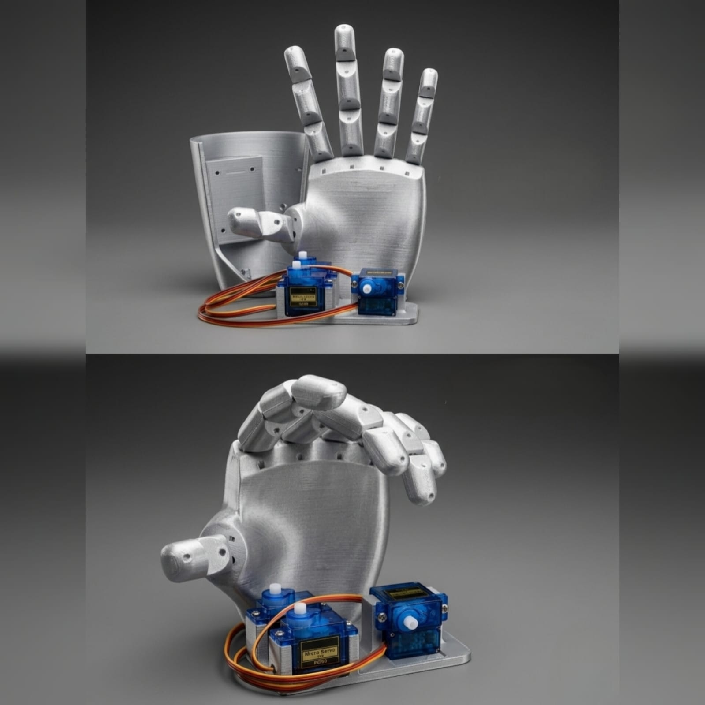

Una prótesis hecha a base de filamento impresa en 3D con la especialidad de generar movimientos similares a una mano humana, con la ayuda de motores y sensores.

Estas prótesis emplean un sistema de hilos de alta resistencia que recorren canales internos en cada falange para simular los tendones humanos. Los servomotores se ubican en la palma y tiran de estos filamentos para cerrar los dedos con precisión.
El movimiento se activa gracias a sensores mioeléctricos que detectan la actividad de los músculos en el antebrazo del usuario. Estas señales pasan a un microcontrolador que las procesa en milisegundos.
El diseño combina filamentos rígidos con zonas de alta fricción en las yemas de los dedos y la palma. Se incluyen piezas en filamento flexible para mejorar el agarre y evitar que los objetos se resbalen.
Este producto lo elaboramos entre un grupo de estudiantes de Tercero con la especialidad de Informática como parte de un proyecto altamente educativo dentro de La Unidad Educativa Particular Sudamericano. Fue principalmente elaborado con tecnología de impresión 3D, generando movimiento a base de motores y sensores, incluyendo la elaboración de todas las piezas que contribuyeron en la construcción de nuestro primer producto.